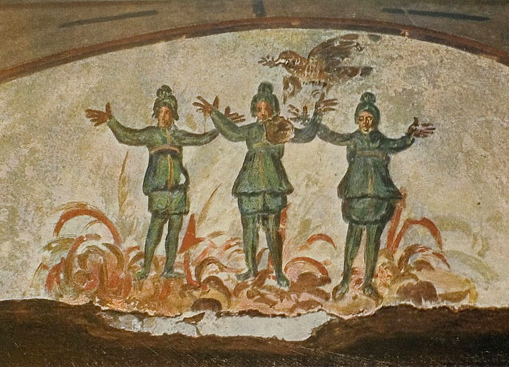

1 Pedro 4 — La Traducción Mister

⚠ Los tres de Daniel 3, «que se pasean en medio del fuego, y no sufren daño alguno», pintados en un muro donde los cristianos de Roma enterraban a sus muertos. El capítulo no nombra ninguna persecución; la pintura acompaña al versículo 12, «no se sorprendan del fuego ardiente que hay entre ustedes, que les viene para probarlos».

Notas del traductor
«Así pues, ya que Cristo sufrió en la carne, ármense también ustedes de la misma manera de pensar». La frase retoma 1 Pedro 3:18, «también Cristo sufrió una vez por los pecados … muerto en la carne», y el «también Cristo sufrió» de 1 Pedro 2:21. El texto bizantino y el Texto Recibido añaden «por nosotros»; la RV60 lee «Cristo ha padecido por nosotros en la carne». Hoplízō, «armar», está en un solo versículo del Nuevo Testamento (diccionario); su sustantivo hopla son las «armas de la luz» de Romanos 13:12. Énnoia, «manera de pensar», está en dos versículos (diccionario). El otro es Hebreos 4:12, «los pensamientos y las intenciones del corazón», donde esta traducción lee «intenciones»; aquí la palabra es el pensamiento con que Cristo obró, y los lectores han de tomarlo como un arma. La RV60 lee «armaos del mismo pensamiento»; la TNM 1987 lee «ármense de la misma disposición mental»; la NVI lee «asuman también ustedes la misma actitud».
⚠ «Porque el que ha sufrido en la carne ha cesado del pecado». Quién es «el que ha sufrido», el griego no lo dice, y las lecturas difieren. Según una, es Cristo, cuyo trato con el pecado está acabado, como dice el «una vez» de 3:18. Según otra, es el creyente: quien ha sufrido en la carne, o ha compartido la muerte de Cristo, ha roto con el pecado, como dice Romanos 6:7, «el que ha muerto ha sido justificado del pecado». Según una tercera, el sufrimiento mismo frena al que sufre para que no siga pecando. Esta traducción no elige. Westcott y Hort imprimen el plural «pecados»; la TNM 1987 lee «ha desistido de los pecados»; la RV 1909 lee «cesó de pecado»; la RV60 lee «terminó con el pecado»; la NVI lee «ha roto con el pecado».
«Para vivir el tiempo que queda en la carne ya no para los deseos de los hombres, sino para la voluntad de Dios». Bióō, «vivir», está en un solo versículo, y su sustantivo bíōsis es la «manera de vivir» de Hechos 26:4 (diccionario). Epíloipos, «lo que queda», también está en un solo versículo. Los «deseos» son «los deseos que antes tenían, en su ignorancia» de 1 Pedro 1:14 y «los deseos de la carne» de 1 Pedro 2:11 (diccionario); «la voluntad de Dios» es la frase de 1 Pedro 2:15 y 3:17, y vuelve en el versículo 19. La RV60 lee «conforme a las concupiscencias de los hombres»; la TNM 1987 lee «ya no para los deseos de los hombres, sino para la voluntad de Dios»; la NVI lee «no satisfaciendo sus pasiones humanas».
«Porque basta ya el tiempo pasado para haber hecho lo que se proponen las naciones». «Las naciones» son los gentiles, y el pasado de los propios lectores está en esta lista: fueron «rescatados de su vana manera de vivir heredada de sus padres» (1 Pedro 1:18). «Lo que se proponen» es boúlēma, un plan o una intención decidida (diccionario). Textos posteriores leen thélēma, «voluntad», y añaden «de la vida» con un pronombre, que el Texto Recibido tiene como «nos»: la RV 1909 lee «nos debe bastar que el tiempo pasado de nuestra vida hayamos hecho la voluntad de los Gentiles».
«Andando como anduvieron en sensualidades, deseos, excesos de vino, orgías, juergas de bebida e idolatrías ilícitas». «Sensualidades» es asélgeia, como en Marcos 7:22 y Gálatas 5:19 (diccionario). Oinophlygía, «exceso de vino», de oînos, «vino», está en un solo versículo (diccionario). Pótos, «juerga de bebida», también está en un solo versículo (diccionario). Kōmos, «orgía», está en tres versículos (diccionario). Los otros dos son listas de Pablo, «no en orgías y borracheras» en Romanos 13:13 y «envidias, borracheras, orgías» en Gálatas 5:21. «Ilícitas» es athémitos, la palabra que Pedro usa en casa de Cornelio en Hechos 10:28, «cuán ilícito es para un hombre judío juntarse … a uno de otra tribu» (diccionario). La RV60 lee «lascivias, concupiscencias, embriagueces, orgías, disipación y abominables idolatrías»; la TNM 1987 lee «excesos con vino, diversiones estrepitosas, partidas de beber e idolatrías ilegales»; la NVI lee «a las borracheras, a las orgías, a las parrandas».
«En esto se sorprenden de que ustedes no corran con ellos hacia el mismo desborde de disolución, y profieren ultrajes». «Se sorprenden» es xenízō, que está en diez versículos (diccionario). Casi todos los demás tratan de un huésped, como Pedro, que «se hospeda con cierto Simón» en Hechos 10:6, y algunos que «hospedaron ángeles» en Hebreos 13:2; en Hechos 17:20 son «cosas extrañas». Los antiguos vecinos encuentran extraños a los lectores, y el versículo 12 da la vuelta al mismo verbo. Syntréchō, «correr con», está en tres versículos, con Marcos 6:33 y Hechos 3:11. Anáchysis, «desborde», literalmente un derramarse, está en un solo versículo (diccionario). Asōtía, «disolución», está en tres versículos (diccionario), con «no se emborrachen con vino, en lo cual hay disolución» en Efesios 5:18 y Tito 1:6. «Profieren ultrajes» es blasphēméō, el verbo de «blasfemar», sin complemento (diccionario): si el ultraje va contra los lectores o contra Dios, el griego no lo dice. El estante suple a los lectores: la RV60 lee «y os ultrajan», la TNM 1987 «siguen hablando injuriosamente de ustedes», y la NVI «por eso los insultan».
«Ellos rendirán cuentas al que está dispuesto a juzgar a los vivos y a los muertos». «Rendir cuentas» es la frase de Mateo 12:36, «darán cuenta de ella en el día del juicio». «Los vivos y los muertos» se dice de Cristo en Hechos 10:42, «el determinado por Dios como juez de vivos y muertos», y en 2 Timoteo 4:1; en esta carta el que juzga es el Padre en 1 Pedro 1:17 y «el que juzga con justicia» en 1 Pedro 2:23. A cuál se refiere aquí, el versículo no lo dice. Westcott y Hort leen «al que juzga». La RV60 lee «al que está preparado para juzgar a los vivos y a los muertos»; la TNM 1987 lee «al que está listo para juzgar».
«Porque para esto se anunció la buena noticia también a los muertos, para que, aunque sean juzgados en la carne según los hombres, vivan en el espíritu según Dios». El verbo es euangelízō, «anunciar buenas noticias», el verbo de «los que les predicaron el evangelio» en 1 Pedro 1:12 (diccionario), no el kērýssō, «hizo proclamación», de 3:19. Está en pasiva, sin nombrar a quién anunció. «Porque» enlaza el versículo con el versículo 5: el que juzga es juez de los muertos tanto como de los vivos. El par «en la carne … en el espíritu» es el par de 3:18, «muerto en la carne pero vivificado en el espíritu», y la misma pregunta, el espíritu humano o el Espíritu de Dios, queda abierta aquí.
⚠ Quiénes son «los muertos», las lecturas difieren, y esta traducción no elige. Según una, son creyentes que oyeron la buena noticia en vida y después murieron; su muerte fue un juicio «en la carne», como mueren todos los seres humanos, y viven «en el espíritu», como vive Dios. En inglés, la NIV imprime esta lectura añadiendo una palabra, «a los que ahora están muertos». Según otra, el versículo va con los espíritus en prisión de 3:19, y los muertos oyeron la buena noticia después de la muerte. Según una tercera, «los muertos» son los muertos espirituales, como en «muertos en sus delitos y sus pecados» de Efesios 2:1. «Según los hombres … según Dios» puede querer decir «a los ojos de los hombres … a los ojos de Dios» o «como son los hombres … como es Dios». La RV60 lee «para que sean juzgados en carne según los hombres, pero vivan en espíritu según Dios»; la TNM 1987 lee «desde el punto de vista de los hombres … desde el punto de vista de Dios»; la NVI lee «según criterios humanos en lo que atañe al cuerpo».
«El fin de todas las cosas se ha acercado. Sean, pues, sensatos y sobrios para las oraciones». «Se ha acercado» es el perfecto de engízō, como en «el reino de Dios se ha acercado» de Marcos 1:15, «el día se ha acercado» de Romanos 13:12 y «la presencia del Señor se ha acercado» de Santiago 5:8. «Fin» es télos (diccionario), y vuelve en el versículo 17, «cuál será el fin de los que desobedecen». «Sean sensatos» es sōphronéō, el hombre sanado «en su sano juicio» de Marcos 5:15 (diccionario); «sobrios» es nēphō, como en «siendo del todo sobrios» de 1 Pedro 1:13 (diccionario). La RV60 lee «el fin de todas las cosas se acerca; sed, pues, sobrios, y velad en oración»; la TNM 1987 lee «se ha acercado. Sean de juicio sano, por lo tanto, y sean vigilantes en cuanto a oraciones»; la NVI lee «para orar bien, manténganse sobrios y con la mente despejada».
«Ante todo, mantengan entrañable el amor de unos por otros, porque el amor cubre multitud de pecados». «Ante todo» es el «Pero sobre todo» de Santiago 5:12. El adjetivo ektenḗs, «entrañable, intenso», está en un solo versículo (diccionario). Su adverbio es el «ámense unos a otros entrañablemente» de 1 Pedro 1:22 y la oración hecha «con fervor» por Pedro en la cárcel en Hechos 12:5. «El amor cubre multitud de pecados» es la frase final de Santiago 5:20, «cubrirá multitud de pecados», y el texto bizantino tiene aquí el mismo futuro. Las dos recuerdan el hebreo de Proverbios 10:12, ve’al kol-pesha’im tekasseh ahavah, «el amor cubre todas las transgresiones»; el griego de Proverbios lee «la amistad cubre a todos los que no son pendencieros» (ambos comprobados; Proverbios 10 aún por llegar en esta traducción). ⚠ Los pecados de quién cubre el amor, los del amado o los del que ama, la frase no lo dice, y esta traducción no elige. La RV60 lee «tened entre vosotros ferviente amor; porque el amor cubrirá multitud de pecados»; la TNM 1987 lee «tengan amor intenso unos para con otros»; la NVI lee «el amor cubre muchísimos pecados».
«Sean hospitalarios unos con otros sin murmuración. Según cada uno ha recibido un don, úsenlo para servirse unos a otros, como buenos administradores de la variada gracia de Dios». «Hospitalarios» es philóxenos, «amigo de los extraños», lo que se pide del supervisor en 1 Timoteo 3:2 y Tito 1:8 (diccionario). «Sin murmuración» es el «Háganlo todo sin murmuraciones» de Filipenses 2:14, y gongysmós es la «murmuración» de los helenistas en Hechos 6:1 (diccionario); el texto bizantino tiene el plural. Chárisma, «don», está en diecisiete versículos (diccionario). Todos los demás están en las cartas que llevan el nombre de Pablo, como «hay diversidad de dones, pero el mismo Espíritu» en 1 Corintios 12:4. «Administradores» es oikonómos, el que gestiona una casa, como en «administradores de los misterios de Dios» de 1 Corintios 4:1, donde «lo que se busca en los administradores es que cada uno sea hallado fiel» (diccionario). «Variada» es poikílos, la palabra de las «diversas pruebas» de 1 Pedro 1:6: la gracia viene en tantas clases como las pruebas. La RV60 lee «buenos administradores de la multiforme gracia de Dios»; la RV 1909 lee «las diferentes gracias de Dios»; la TNM 1987 lee «la bondad inmerecida de Dios expresada de diversas maneras»; la NVI lee «la gracia de Dios en sus diversas formas».
«Si alguno habla, que sea como oráculos de Dios; si alguno sirve, que sea como por la fuerza que Dios suministra». «Oráculos» es lógia, «los oráculos de Dios» confiados a los judíos en Romanos 3:2 y «los primeros elementos de los oráculos de Dios» de Hebreos 5:12 (diccionario). Chorēgéō, «suministrar», está en dos versículos (diccionario). El otro es 2 Corintios 9:10, «el que suministra abundante semilla al sembrador … suministrará». La RV60 lee «hable conforme a las palabras de Dios»; la TNM 1987 lee «como si fueran [las] sagradas declaraciones formales de Dios»; la NVI lee «como quien expresa las palabras mismas de Dios».
⚠ «Para que en todo Dios sea glorificado por medio de Jesucristo, a quien pertenecen la gloria y el poder por los siglos de los siglos. Amén». «A quien» puede remitir a Jesucristo, el nombre más cercano, o a Dios, el sujeto de la frase; las lecturas difieren, y esta traducción mantiene el orden griego y no elige. La misma pregunta está en Hebreos 13:21, «por medio de Jesucristo, a quien sea la gloria por los siglos». El griego tiene un verbo, estín, «es», así que la línea dice que la gloria le pertenece, en vez de pedir que se le dé. «Poder» es krátos, como en «a él sea la honra y el poder eterno» de 1 Timoteo 6:16 (diccionario). La RV60 lee «a quien pertenecen la gloria y el imperio»; la RV 1909 lee «al cual es gloria é imperio»; la TNM 1987 empieza una frase nueva, «De él son la gloria y la potencia para siempre jamás»; la NVI lee «a quien sea la gloria y el poder».
«Amados, no se sorprendan del fuego ardiente que hay entre ustedes, que les viene para probarlos, como si les sucediera algo extraño». «Se sorprendan» es otra vez xenízō, del versículo 4, y «extraño» es xénos, de la misma raíz (diccionario): los vecinos encuentran extraños a los lectores, y los lectores no han de encontrar extraña su prueba. Pýrōsis, «fuego ardiente», está en tres versículos (diccionario). Los otros dos son «el humo de su incendio» en Apocalipsis 18:9 y 18:18. En el griego de Proverbios 27:21 la palabra es la prueba del metal, dokímion argyríō kai chrysṓ pýrōsis, «para la plata y el oro, la prueba es el fuego», con el dokímion de 1 Pedro 1:7, «la probada autenticidad de la fe de ustedes —más preciosa que el oro, que perece aunque se prueba por fuego—»; el hebreo de Proverbios 27:21 lee «el crisol es para la plata, y el horno para el oro» (ambos comprobados; Proverbios 27 aún por llegar en esta traducción). «Para probarlos» es peirasmós, las «pruebas» de 1:6 (diccionario). La RV60 lee «del fuego de prueba que os ha sobrevenido»; la RV 1909 lee «cuando sois examinados por fuego»; la TNM 1987 lee «a causa del incendio entre ustedes»; la NVI lee «del fuego de la prueba».
Qué es ese fuego, la carta no lo nombra. Lo que sí nombra son palabras: a los lectores se los acusa como malhechores (1 Pedro 2:12, 3:16), se los ultraja (versículo 4) y se los insulta (versículo 14). Aquí no se nombra ningún tribunal, gobernador ni emperador, y una lectura que liga «el fuego» a una persecución concreta trae la ocasión de fuera del texto.
«Sino que, en la medida en que comparten los padecimientos de Cristo, alégrense, para que también en la revelación de su gloria se alegren y salten de gozo». «Comparten» es koinōnéō, el «Compartan con los santos» de Romanos 12:13; «los padecimientos de Cristo» son los «destinados a Cristo» de 1 Pedro 1:11 (diccionario), y Pablo habla de «la sociedad de sus padecimientos» en Filipenses 3:10 y de los que «padecemos con él, para que también seamos glorificados juntamente con él» en Romanos 8:17. «Se alegren y salten de gozo» es chaírō con agalliáō, el par de Mateo 5:12 (ya en estas páginas), «Alégrense y gócense»; agalliáō es el «se alegran grandemente» de 1 Pedro 1:6 y 1:8 (diccionario). «La revelación» es apokálypsis, como en «en la revelación de Jesucristo» de 1 Pedro 1:7 y 1:13 (diccionario). La RV60 lee «os gocéis con gran alegría»; la RV 1909 lee «os gocéis en triunfo»; la TNM 1987 lee «se regocijen y se llenen de gran gozo».
«Si los insultan por el nombre de Cristo, son felices, porque el Espíritu de la gloria y de Dios reposa sobre ustedes». «Insultan» es oneidízō, como en «Felices son ustedes cuando los insulten» de Mateo 5:11 (ya en estas páginas) y Lucas 6:22 (diccionario); «felices» es makários, como en «son felices» de 1 Pedro 3:14 (diccionario). Los apóstoles se fueron «gozosos de haber sido tenidos por dignos de ser deshonrados por el Nombre» en Hechos 5:41. «Reposa» es anapaúomai, el verbo del griego de Isaías 11:2, «reposará sobre él el Espíritu de Dios», donde el hebreo tiene «el Espíritu de Jehová» (ambos comprobados; Isaías 11 aún por llegar en esta traducción). ⚠ El griego dice, palabra por palabra, «el de la gloria y el de Dios Espíritu»: o un solo Espíritu llamado «de la gloria y de Dios», o «la gloria» y «el Espíritu de Dios» como dos cosas que reposan sobre los lectores. La RV 1909 lee «la gloria y el Espíritu de Dios reposan sobre vosotros», en plural; la RV60 y la NVI leen «el glorioso Espíritu de Dios»; la TNM 1987 suple una palabra, «el [espíritu] de gloria, sí, el espíritu de Dios». La Vulgata latina lee quod est honoris, gloriae, et virtutis Dei, «lo que es de la honra, la gloria y el poder de Dios». El texto bizantino añade «y de poder», y él y el Texto Recibido añaden una frase que la RV60 imprime como «Ciertamente, de parte de ellos, él es blasfemado, pero por vosotros es glorificado»; la TNM 1987 y la NVI no la tienen.
«Porque ninguno de ustedes ha de sufrir como asesino, o ladrón, o malhechor, o como entrometido en asuntos ajenos». «Malhechor» es kakopoiós, la palabra de 1 Pedro 2:12, «hablan mal de ustedes como de malhechores», y de los gobernadores enviados «para castigar a los malhechores» en 1 Pedro 2:14. La Vulgata latina lee maledicus, «maldiciente». ⚠ Allotriepískopos está en un solo versículo (diccionario), y no se conoce ningún uso griego anterior de la palabra (se informa, no comprobado aquí), así que la frase tiene que llevar su sentido. Está formada de allótrios, «de otro», y epískopos, «supervisor», la palabra de 1 Pedro 2:25, «el pastor y supervisor de sus almas» (diccionario): un supervisor de lo que no es suyo. La RV60 lee «por entremeterse en lo ajeno»; la RV 1909 lee «por meterse en negocios ajenos»; la TNM 1987 lee «como entremetido en asuntos ajenos»; la Vulgata lee alienorum appetitor, alguien que desea lo que pertenece a otros. El segundo «como» separa esta última palabra de los tres delitos que la preceden.
«Pero si como cristiano, no se avergüence, sino glorifique a Dios en este nombre». Christianós está en tres versículos (diccionario): los discípulos «llamados cristianos» por primera vez en Antioquía en Hechos 11:26, y el «me persuades a hacerme cristiano» de Agripa en Hechos 26:28. Aquí el nombre está en una lista con asesino y ladrón, como una acusación bajo la que alguien sufre. «No se avergüence» es el verbo de «no me avergüenzo del evangelio» en Romanos 1:16. «En este nombre» es la lectura de Westcott y Hort, de Tregelles y de la 27.ª edición de Nestle-Aland; la 28.ª edición y el texto bizantino leen en tṓ mérei toutō, «en este asunto». La TNM 1987 lee «en este nombre»; la RV 1909 lee «en esta parte»; la RV60 lee «por ello»; la NVI lee «por llevar el nombre de Cristo».
«Porque es el tiempo de que el juicio comience por la casa de Dios; y si comienza primero por nosotros, ¿cuál será el fin de los que desobedecen al evangelio de Dios?». «El tiempo» es kairós, el tiempo señalado (diccionario). «La casa de Dios» es la «casa espiritual» de 1 Pedro 2:5, la «casa de Dios, que es la congregación del Dios vivo» de 1 Timoteo 3:15, y la casa de Hebreos 3:6, «esa casa somos nosotros». Un juicio que comienza por el lugar mismo de Dios está en los profetas: en Jeremías 25:29, «en la ciudad sobre la cual es invocado mi nombre, yo comienzo a traer el mal», y en Ezequiel 9:6, «comiencen por mi santuario», donde el griego tiene apo tōn hagíōn mou árxasthe, con el verbo y la preposición que usa Pedro (comprobado; Ezequiel 9 aún por llegar en esta traducción). Pedro no cita a ninguno de los dos. «Desobedecen» es apeithéō, como en «desobedecen a la palabra» de 1 Pedro 2:8, 3:1 y «que en otro tiempo desobedecieron» de 3:20 (diccionario); «el evangelio de Dios» es la frase de Pablo en Romanos 1:1, y 2 Tesalonicenses 1:8 tiene «a los que no obedecen al evangelio». La RV60 lee «es tiempo de que el juicio comience por la casa de Dios»; la TNM 1987 lee «es el tiempo señalado para que el juicio comience con la casa de Dios»; la NVI lee «comience por la familia de Dios» y «los que se rebelan contra el evangelio de Dios».
Y «si el justo apenas se salva, ¿dónde aparecerán el impío y el pecador?». La línea es el griego de Proverbios 11:31, ei ho men díkaios mólis sṓzetai, ho asebḗs kai hamartōlós poû phaneîtai, palabra por palabra, salvo que el texto de Pedro no tiene men (comprobado). El hebreo dice otra cosa: hen tsaddiq ba’arets yeshullam, af ki-rasha’ vechote’, «Mira, el justo recibe su pago en la tierra; ¡cuánto más el malvado y el pecador!» (comprobado; Proverbios 11 aún por llegar en esta traducción). Pedro no dice «está escrito», y esta traducción imprime la línea entre comillas, como la TNM 1987 y la NVI. Mólis, «apenas», está en seis versículos, como en «apenas morirá alguien por un justo» de Romanos 5:7 y «apenas lograron que las multitudes dejaran de sacrificarles» de Hechos 14:18. «Impío» es asebḗs (diccionario). La RV60 lee «Y: Si el justo con dificultad se salva, ¿En dónde aparecerá el impío y el pecador?»; la TNM 1987 lee «Y si el justo con dificultad se salva, ¿dónde aparecerán el impío y el pecador?»; la NVI lee «¿cómo quedarán el impío y el pecador?».
«Así que también los que sufren según la voluntad de Dios encomienden sus almas a un Creador fiel, haciendo el bien». «Según la voluntad de Dios» retoma 3:17, «si la voluntad de Dios así lo quiere». «Encomienden» es paratíthēmi, la palabra de Jesús en la cruz en Lucas 23:46, «Padre, en tus manos encomiendo mi espíritu» (diccionario); en 1 Pedro 2:23 Cristo «se encomendaba al que juzga con justicia» con otro verbo, paradídōmi. Ktístēs, «Creador», está en un solo versículo (diccionario); «fiel» es como en «Dios es fiel» de 1 Corintios 10:13. Agathopoiía, «el hacer el bien», también está en un solo versículo (diccionario). Su verbo es el «hacer el bien» de 1 Pedro 2:15, 2:20, 3:6 y 3:17, y la serie de la carta sobre hacer el bien mientras se sufre termina en él. Los textos bizantino y Recibido añaden «como»: la RV 1909 lee «encomiéndenle sus almas, como á fiel Criador, haciendo bien». La RV60 lee «encomienden sus almas al fiel Creador, y hagan el bien»; la NVI lee «confíen en su fiel Creador y sigan practicando el bien».
Patrones que vale la pena recordar
Dónde esta traducción mantiene las palabras exactas: «ármense»; «ha cesado del pecado»; «las naciones»; «sensualidades», como en Gálatas 5:19; «orgías», como en Romanos 13:13; «ilícitas», como en Hechos 10:28; «disolución», como en Efesios 5:18; «se sorprenden», en los versículos 4 y 12; «se anunció la buena noticia», no «hizo proclamación»; «se ha acercado», como en Santiago 5:8; «entrañable», como en 1:22; «cubre multitud de pecados», como en Santiago 5:20; «murmuración», como en Hechos 6:1; «administradores»; «variada», la palabra de las diversas pruebas de 1:6; «oráculos», como en Romanos 3:2; «el fuego ardiente»; «insultan» y «felices», como en Mateo 5:11; «cristiano»; «desobedecen», como en 2:8; «apenas», como en Romanos 5:7; y «encomienden», como en Lucas 23:46.
Ecos cumplidos. «Cristo sufrió en la carne» de 1 Pedro 3:18; la buena noticia «anunciada también a los muertos», junto a la proclamación a los espíritus en prisión de 1 Pedro 3:19; «el amor cubre multitud de pecados» de Santiago 5:20; las diversas pruebas y el oro probado por fuego de 1 Pedro 1:6 y 1:7, en la gracia variada y el fuego ardiente; ser sobrios de 1 Pedro 1:13; el amor entrañable de 1 Pedro 1:22; la casa espiritual de 1 Pedro 2:5; los malhechores de 1 Pedro 2:12; el hacer el bien de 1 Pedro 2:15; el supervisor de 1 Pedro 2:25 dentro de «entrometido»; «son felices» de 1 Pedro 3:14; y la voluntad de Dios de 1 Pedro 3:17.
Ecos sembrados. «Partícipe de la gloria que está a punto de ser revelada» en 5:1; «el pastor principal» en 5:4; «Sean sobrios; manténganse despiertos» en 5:8; «A él sea el poder por los siglos de los siglos» en 5:11; y «el humo de su incendio» en Apocalipsis 18:9.
Lo siguiente en este libro: 1 Pedro 5, ya en estas páginas. «Pastoreen el rebaño de Dios»; el pastor principal y la corona inmarcesible de la gloria; «Dios se opone a los soberbios» una vez más; «echando sobre él toda su preocupación»; el adversario que anda alrededor «como león rugiente»; y saludos de «la que está en Babilonia» y de Marcos, «mi hijo».